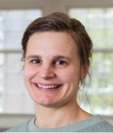
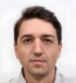
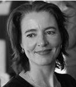

Daphne Ruiter, namens AIOS-groep maart 2019, Leiden
Mariëtte, sociale collega, empathische dokter, leergierige student, sportieve vrouw, optimistisch mens. Waar Mariette ook binnen kwam, ze bracht altijd een positieve sfeer met zich mee. Als de zon die tussen de wolken door komt op een regenachtige dag. In onze AIOS-groep plaatste ze zich nooit erg op de voorgrond, maar met één opmerking kon ze ineens volledig raak uit de hoek komen en alles in (een ander) perspectief plaatsen. Na wat twijfels over of ze wel op de juiste plek
zat, koos ze ervoor om de opleiding tot specialist ouderengeneeskunde vol overgave voort te zetten. De vastberadenheid en het perfectionisme zijn kenmerken die Mariëtte ook op andere vlakken inzette, waaronder als keepster in het handbalteam. En ondanks al deze (prestatie)drukte kwam er nog een mooie uitdaging bij, namelijk het schrijven van het hoofdstuk “Essentiële Tremor” in het boek “Kleine Kwalen en alledaagse klachten bij ouderen”. Iets wat ze samen met een collega-AIOS met veel enthousiasme en plezier op een hoog niveau heeft afgewerkt. Verder genoot Mariëtte erg van de buitenlucht en samenzijn met haar vriend en familie, waar zij een heel sterke band mee had. Ze was een alleskunner die zich helemaal had gevonden in het vak van de ouderengeneeskunde en daar niet alleen het hoogst haalbare van zichzelf in verwachtte, maar hier ook intens van kon genieten.
Op 11 augustus jl. zijn wij, op veel te jonge leeftijd, een Bikkel verloren. Een Bikkel met de hoofdletter B, die ook in haar ziekteperiode bleef volhouden tot het echt niet anders meer kon. Een zeer getalenteerd AIOS ouderengeneeskunde die het vak zoveel goeds te brengen had. Een fantastische collega op wie je altijd kon rekenen en bovenal een ontzettend lief mens.
Je stoel is te leeg, Mariëtte, en ons ZOOM-scherm te klein. Wat missen wij je enorm… Dankjewel voor de enorme inspiratiebron die je voor ons bent geweest, en altijd zult blijven.
We zullen je niet vergeten
Al draait de wereld door
De wens van Mariëtte was om, in plaats van bloemen, een
donatie te doen aan het KWF om meer onderzoek naar
melanomen mogelijk te maken. Doneren kan nog steeds:
Namens de AIOS-jaarvertegenwoordigers 2020
)
Yodit Araia; Manija Arian; Roeland Bik; Charlotte Bruijsten; Stephanie van Dijk; Laurens
Dijkgraaf; Jorn Goet; Bianca de Jong- Schmit; Christine Kers-Van Seters; Irina ten Klooster;
Vicky Louwen; Esther Lugten; Janneke Ravensberg; Daphne Ruiter; Manouk Schreuder;
Ralph Setyo; Dilsher Singh; Denise Sluiter; Eline van der Stoep; Cynthia van Vliet;
Susanne Wilhelm
Digitalisering gaat altijd door. Echter dat 2020 hét jaar zou worden van de digitalisering in het onderwijs had niemand verwacht. Daar waar we vorig jaar als jaarvertegenwoordiging (JVT) een kleine stap zette met een eigen emailadres maakte we dit jaar een grote stap in die digitalisering.
Geen enkele vergadering was meer fysiek maar alles ging online. Het zelfde gold voor het onderwijs en wij zijn nauw betrokken geweest bij deze verandering.
De JVT bestaat uit een afvaardiging van één of twee AIOS uit elke mentorgroep. Wij geven input zodat de opleiding aansluit bij de behoeften van de AIOS. De AIOS begeven zich in een werkveld dat continu ontwikkelt en verandert. Deze input geven we niet alleen door regelmatig te vergaderen met leden van het managementteam, onderwijscoördinatoren en beleidsmedewerkers. Een afvaardiging van de JVT zit ook in de curriculumcommissie, samen met opleiders, oud-AIOS en patiënten. Deze commissie fungeert als klankbord voor de opleiding bij het ontwikkelen van nieuw onderwijs. Daarnaast neemt de JVT deel aan de landelijke onderwijscommissie van VASON. De landelijke onderwijscommissie heeft als doel om de landelijke onderwijsprogramma’s te evalueren. Tevens maakt de commissie de overeenkomsten en verschillen in de vijf opleidingsinstituten inzichtelijk en bespreekt onderwerpen die bij alle instituten voorkomen.
De COVID-19 pandemie heeft niet alleen het werk maar ook het onderwijs voor AIOS beïnvloed en veranderd. Plotseling werd al het onderwijs digitaal. Dit vroeg veel flexibiliteit van zowel AIOS als docenten. Als JVT kozen wij ervoor om de frequentie van onze vergaderingen te verhogen zodat we sneller problemen konden signaleren en constructief konden meedenken over oplossingen. Zo zijn we samen met de opleiding gekomen tot een aangepaste duur van het online onderwijs en hebben we oplossingen kunnen aandragen voor het uitvoeren van verrichtingen en het geven van referaten.
Uiteraard zijn we niet alleen bezig geweest met de overstap naar digitaal onderwijs. Door het signaleren van zowel de behoefte bij AIOS áls de bereidheid bij ziekenhuizen is het dit jaar mogelijk geweest om de ziekenhuisstage parttime te volgen. Daarnaast zijn we betrokken geweest bij het tot stand komen van een handboek voor de opleiding en het handboek voor het Wetenschappelijk Leer Onderwijs (WLO). Deze handboeken zorgen voor veel duidelijkheid voor zowel startende AIOS als AIOS die al verder zijn in de opleiding.
Naast duidelijk informatie vooraf hecht de JVT ook veel waarde aan evaluatie achteraf. Het document om opleiders te evalueren is meerdere keren besproken en de JVT is tevreden dat dit nu niet alleen gebruikt wordt in de diverse PG/somatiek stages maar ook in de andere stages. Bovendien is er eind 2020 een start gemaakt met een nieuwe wijze van evalueren van het onderwijs door alle AIOS. Tevens is besloten dat AIOS deel zullen nemen aan de visitatiecommissie in de zomer van 2021.
Naast positieve veranderingen in informatievoorziening en evaluatiecyclus zijn er ook nog belangrijke aandachtspunten. Zo blijft de communicatie over de onderwijsplanning een heikel punt. Ook andere communicatie naar AIOS laat soms te wensen over. De JVT hoopt dat de overstap naar Brightspace hierin verbetering zal brengen. We zijn in ieder geval zeer positief over de betrokkenheid van stafleden bij het geluid van de JVT. We merken dat we samen sneller tot constructieve oplossingen komen. Wij hopen dat we deze samenwerking kunnen voortzetten zodat we ook in 2021 weer een bijdrage kunnen leveren om het onderwijs naar een hoger niveau te brengen.
Het wedervaren van de aioto in Leiden

Anouk Kabboord
Het afgelopen jaar is het aioto-jaar natuurlijk onvergelijkbaar geweest met alle andere jaren daarvoor; zoals voor iedereen zal gelden.
Voor mij betekent dit dat ik in mijn agenda of OV-chipkaart historie zou moeten nakijken wanneer ik überhaupt voor het laatst in Leiden op de PHEG afdeling ben geweest. Helaas.
Aan de andere kant, de reden dat ik geen noodzaak had om naar Leiden te gaan is een positieve reden, namelijk dat ik ben aanbeland in de fase van het afschrijven van mijn proefschrift in het afgelopen jaar. Dit kon makkelijk thuis gebeuren en betekende eens in de zoveel tijd een ZOOM of what's app meeting met de promotie commissie. Wat in deze tijd prima ging!
Omdat ik wat betreft dit stukje jaarbericht een nogal 'onavontuurlijk' wetenschapsjaar achter de rug heb, heb ik mijn mede aioto's gevraagd wat hun ervaringen zoal zijn als aioto in Leiden 2020/2021. Ten eerste stuit je vaak op verschillende uitdagingen als het gaat om de combinatie onderzoek en opleiding. Wat wij als aioto's in Leiden hebben ervaren is ten eerste dat er een goede begeleiding van de (co-)promotoren is en ten tweede vanuit de opleiding veel flexibiliteit is, in bijvoorbeeld het vormen van je persoonlijk opleidingsschema en de inhoud van je stagetraject. Ten slotte hebben verschillende aioto's gemerkt dat er aandacht, meelevendheid en professioneel meedenken was wanneer er bergen & dalen op de weg ontstonden, zoals bij gezondheidsproblemen of juist bij een blije gebeurtenis als een zwangerschap en bevalling! Kortom, wij ervaren het hele aioto traject in Leiden als professioneel, en tegelijkertijd ook heel menselijk en persoonlijk.
Inmiddels is de gehele groep gegroeid naar inmiddels 8 aioto's. We verwachten dat in het jaar 2021 meerdere aioto trajecten de eindstreep zullen behalen, bekroond met een promotie. Zodra dit weer mogelijk is hopen we dan ook als gehele Leidse aioto-so groep elkaar te ontmoeten en dit feest te vieren onder het genot van een hapje, drankje of diner, want we missen het wel om elkaar in levende lijve te ontmoeten. Niet alleen vanwege de gezelligheid, maar ook om elkaar te helpen met ieders onderzoek, tips&tricks uit te wisselen in het geven van onderwijs en plannen te maken voor de toekomst.
Wij wensen iedereen alvast een heel goed & zonnig voorjaar toe met een vrije & gezonde zomer!
Opgeleid worden ten tijde van Corona

Roeland Bik, AIOS
2020 is voor iedereen een heel ander jaar geworden dan verwacht. Zelf ben ik in maart 2020 begonnen aan de opleiding tot Specialist ouderen geneeskunde. De introductie was nog gezamenlijk in een hotel maar snel daarna volgde de lockdown en veranderde op het werk en opleiding een hoop. Zoveel mogelijk op afstand, Visites, MDO’s en opleiding. Het bracht vele uitdagingen met zich mee. Voor welke hulpvraag moet ik nog langs een cliënt?, geef ik nog wel goede zorg? Hebben we adequate protocollen voor een eventuele COVID uitbraak? En ga zo maar door.
Als ik op deze periode terugkijk heb ik er veel van geleerd. De onzekerheid die we in het begin denk ik allemaal wel ervaarden, heeft plaats gemaakt voor meer zelf vertrouwen, dat door goede samenwerking en doorzettingsvermogen een hele hoop bereikt kan worden.
Daarnaast het gevoel dat je niet alleen staat. Bij het vak van specialist ouderen geneeskunde staat bij mij toch wel het samenwerken centraal. En ondanks alle afstand heb ik veel saamhorigheid ervaren in het verpleeghuis.
Cuba Juntos 2020

Els Streefkerk
Misschien herinnert u zich nog dat In januari 2020 Cuba Juntos, een groep van 17 man samengesteld uit huisartsen en specialisten ouderengeneeskunde in opleiding, wijkverpleegkundigen en een diëtiste naar Havana vertrok, voor een verblijf van een maand. Deze interprofessionele keuze-stage, ontworpen en gegeven vanuit het LUMC door Jentie Kraamer, werd voor de eerste keer aangeboden en is een groot succes geworden.
Het is bijzonder dat we, nu we ons voorbereiden op Cuba Juntos in januari 2022, nog steeds terugkrijgen hoeveel impact deze reis op alle deelnemers heeft gehad.
Cuba is interessant omdat het min of meer dezelfde levensverwachting en kindersterfte heeft als Nederland. Dat is opvallend, omdat het een ontwikkelingsland is dat gratis gezondheidszorg van niveau aan alle Cubanen biedt, waarbij het sleutelwoord preventie is.
Instituut ENSAP heeft ons aldaar een degelijk en afwisselend programma aangeboden, waardoor we in korte tijd heel veel te weten zijn gekomen over de Cubaanse gezondheidszorg. Omdat de deelnemers aan deze module zich in de maand voorafgaand aan de reis zich goed hadden voorbereid in hun interprofessionele sub-groepjes, heeft dit geleid tot diepgang, discussie en verdieping van verschillende onderwerpen. In Havana hebben zij twee presentaties verzorgd aan de studiereis van huisartsen en specialisten ouderengeneeskunde, die ook twee weken ter plaatse waren.
Na terugkomst organiseerde de groep een symposium, waarin alle kennis, ervaringen en mogelijk te implementeren aspecten in Nederland aan de orde kwamen. Ook heeft het geïnspireerd tot het schrijven van artikelen. Het meest sprekende voorbeeld van de impact die de reis heeft gehad, is dat één van de inmiddels afgestudeerde huisartsen nu op Terschelling werkt!
“De lijnen met bijvoorbeeld de thuiszorg zijn hier bijna net zo kort als in Cuba. Ook de familie speelt hier een grotere rol, dus veel gevoel van herkenning! Het is daardoor gebruikelijker om meer naast de patiënt te staan en elkaar aan te spreken met de voornaam bijvoorbeeld.
Het indelen van alle patiënten in vier groepen (zoals op Cuba) werd door mijn praktijkhouder zeker een interessant concept gevonden. Mogelijk wordt dat nog uitgewerkt. Verder investeer ik nu meer tijd in contact met de wijkverpleging; bijna dagelijks wel even sparren over patiënten.”
Duco van Eden, Terschelling, april 2021
Natuurlijk kon de keuze-stage in januari 2021 niet doorgaan. Toch gaan we er met vertrouwen vanuit dat we in januari 2022 wel weer kunnen gaan. Het enthousiasme is in ieder geval groot: er was grote belangstelling voor de informatieavonden en er zijn aanmeldingen vanuit het hele land.
Als het niet door kan gaan, zal i.s.m. Kirsten Langeveld, die de halve minor Public Health voor geneeskundestudenten verzorgt en ook al enige jaren naar Havana gaat met haar studenten, worden gekeken naar een alternatief programma.
Vast staat dat Cuba Juntos in verschillende opzichten mooi aansluit bij de doelstellingen van het driejarenplan van SOOL: interprofessioneel en innovatief onderwijs, samenwerking, o.a. met de huisartsenopleiding, meer aandacht voor preventie en cross-culturele gezondheidszorg.
 Mariëtte, sociale collega, empathische dokter, leergierige student, sportieve vrouw, optimistisch mens. Waar Mariette ook binnen kwam, ze bracht altijd een positieve sfeer met zich mee. Als de zon die tussen de wolken door komt op een regenachtige dag. In onze AIOS-groep plaatste ze zich nooit erg op de voorgrond, maar met één opmerking kon ze ineens volledig raak uit de hoek komen en alles in (een ander) perspectief plaatsen. Na wat twijfels over of ze wel op de juiste plek
zat, koos ze ervoor om de opleiding tot specialist ouderengeneeskunde vol overgave voort te zetten. De vastberadenheid en het perfectionisme zijn kenmerken die Mariëtte ook op andere vlakken inzette, waaronder als keepster in het handbalteam. En ondanks al deze (prestatie)drukte kwam er nog een mooie uitdaging bij, namelijk het schrijven van het hoofdstuk “Essentiële Tremor” in het boek “Kleine Kwalen en alledaagse klachten bij ouderen”. Iets wat ze samen met een collega-AIOS met veel enthousiasme en plezier op een hoog niveau heeft afgewerkt. Verder genoot Mariëtte erg van de buitenlucht en samenzijn met haar vriend en familie, waar zij een heel sterke band mee had. Ze was een alleskunner die zich helemaal had gevonden in het vak van de ouderengeneeskunde en daar niet alleen het hoogst haalbare van zichzelf in verwachtte, maar hier ook intens van kon genieten.
Mariëtte, sociale collega, empathische dokter, leergierige student, sportieve vrouw, optimistisch mens. Waar Mariette ook binnen kwam, ze bracht altijd een positieve sfeer met zich mee. Als de zon die tussen de wolken door komt op een regenachtige dag. In onze AIOS-groep plaatste ze zich nooit erg op de voorgrond, maar met één opmerking kon ze ineens volledig raak uit de hoek komen en alles in (een ander) perspectief plaatsen. Na wat twijfels over of ze wel op de juiste plek
zat, koos ze ervoor om de opleiding tot specialist ouderengeneeskunde vol overgave voort te zetten. De vastberadenheid en het perfectionisme zijn kenmerken die Mariëtte ook op andere vlakken inzette, waaronder als keepster in het handbalteam. En ondanks al deze (prestatie)drukte kwam er nog een mooie uitdaging bij, namelijk het schrijven van het hoofdstuk “Essentiële Tremor” in het boek “Kleine Kwalen en alledaagse klachten bij ouderen”. Iets wat ze samen met een collega-AIOS met veel enthousiasme en plezier op een hoog niveau heeft afgewerkt. Verder genoot Mariëtte erg van de buitenlucht en samenzijn met haar vriend en familie, waar zij een heel sterke band mee had. Ze was een alleskunner die zich helemaal had gevonden in het vak van de ouderengeneeskunde en daar niet alleen het hoogst haalbare van zichzelf in verwachtte, maar hier ook intens van kon genieten.